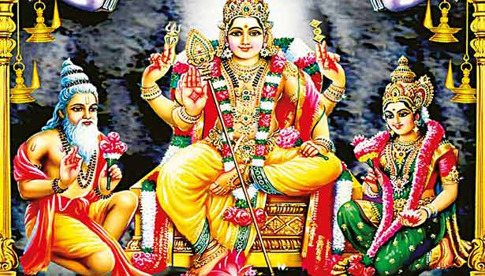

முருகன் வரலாறு

யாமிருக்க பயமேன் என்பது முருகப் பெருமானின் அருள்வாக்கு. எளியோரைக் காக்கும் இறைவனாக முருகன் அறியப்படுகிறார். குன்று இருக்கும் இடமெல்லாம் குமரன் இருக்கும் இடம் என குன்றுகள் தோறும் கோயில்களைக் கொண்டுள்ளார். அத்தகைய முருகப்பெருமான் பிறப்பைப் பற்றி புராணக் கதைகள் என்ன சொல்கிறது என்பதை அறிந்து கொள்ளலாம் வாருங்கள்!
முருகப் பெருமான் தமிழர்களின் ஒப்பற்ற தெய்வமாவார். தொல்காப்பியரின் கூற்றுப்படி தொன்மையான தமிழர்களின் ஐந்திணை வழிபாடுகளில் முருகன் சேயோனாக வருகிறார். சேயோன் குறிஞ்சி நிலத் தலைவனாவார். ஐந்திணைகளில் முல்லை நிலத்திற்குரிய தெய்வமாக மாயோனும்(திருமால்) மருத நிலத்தின் தெய்வமாக இந்திரனும் பாலை நிலத்தின் தெய்வமாக கொற்றவையும் நெய்தல் நிலத்தின் தெய்வமாக வருண பகவானும் இருக்கிறார்கள். இருந்தாலும் முருகனை அதிகம் வழிபடுபவர்கள் தமிழர்களாக இருப்பதால் இக்காலத்தில் அவரைத் தமிழ்க் கடவுள் என்று அடையாளப்படுகிறார்.அன்னை பார்வதி தேவியின் ஒரு அவதாரத்தில் மலைகளின் அரசரான இமவான் மன்னனின் மகளாக பிறந்தார். அவர் மீண்டும் சிவனை அடைவதற்குக் கடும் தவம் புரிந்தார். அவருடைய தவத்தினால் சிவன் பெரிதும் மகிழ்ச்சி அடைந்தார். ஆகவே பார்வதியை மணந்து அவருடன் அழைத்துச் சென்றார். அவர்கள் இருவரும் கந்தமாதான பர்வதத்தில் தங்கினர். அங்கு சில நாட்கள் தங்களுடைய மண வாழ்வினைக் கழித்தார்கள். அதன் பின்பு சிவ பெருமான் ஆழ்ந்த தியானத்தை மேற்கொண்டார்.
அப்போது பார்வதி அவருக்கு சேவை செய்வதையே தனது பக்தியாக நினைத்து அவருக்கு அனைத்து சேவைகளையும் செய்தார். அந்த நேரத்தில் அசுரக் குல அரசரான சூரபத்மன் மற்ற அனைத்து தேவர்களையும் சிறைபிடித்து கைது செய்தார். வானுலகம் வெறிச்சோடி இருந்தது. மூன்று உலகங்களிலும் பேய்களின் ஆட்சி நடந்தது.ஒருமுறை சிவபெருமானும் பார்வதி அம்மையாரும் அந்த சரவண பொய்கைக்கு வந்திருந்தனர். அப்போது தாயான பார்வதி அந்த ஆறு குழந்தைகளையும் ஒன்றாக கட்டித் தழுவி அவர்களை ஈசானம், தத்புருஷம், வாமதேவம், அகோரம், சத்தியோஜதம் மற்றும் ஆதோமுகம் ஆகிய ஆறு முகங்களுடன் ஒரே உருவமாக மாற்றினார்.அத்தகைய முருகப்பெருமான் பக்தர்களால் சண்முகன், முருகன், சுப்பிரமணியன், கந்தன், கார்த்திகேயன் மற்றும் இன்னும் பல பெயர்களில் அழைக்கப்படுகிறார். அன்னை பார்வதி முருகப்பெருமானுக்குத் தனது சக்திகளை உள்ளடக்கிய வேல் ஒன்றைப் பரிசாக வழங்கினார். அந்த வேலைக் கொண்டு முருகன் சூரபத்மனுடன் போரிட சென்றார்.போரில் சூரபத்மன் இரண்டாக பிளக்கப்பட்டார். பிறகு அசுரரான சூரபத்மன் முருகனிடம் இறைவா நான் உங்களுடனே இருக்க விரும்புகிறேன் என்று வேண்டியதால் ஒரு பாகத்தைச் சேவலாகவும் ஒரு பாகத்தை மயிலாகவும் மாற்றினார். அதில் சேவல் முருகப்பெருமானின் கொடியிலும் மயிலானது அந்த இறைவனின் ஊர்தியாகவும் மாறியன. இவ்வாறு பல பெருமைகளை முருகப்பெருமான் தன்னகத்தே கொண்டுள்ளார். தமிழர்கள் நெஞ்சில் நீங்காத புகழைப் பெற்றுள்ளார். தன்னுடைய பக்தர்களால் பல கோயில்களைப் பெற்று அந்த கோயில்களில் இருந்து தன் மக்களுக்கு அருள் பாலிக்கிறார்.
திருப்பரங்குன்றம்

கயிலாயத்தில் சிவபெருமான், பார்வதி தேவிக்கு ஓம் எனும் பிரணவ(பரம்பொருளே எனும் பொருளுடைய) மந்திரத்தின் உட்பொருளை உபதேசிக்கும் போது, தன் தாயாரின் மடிமீது முருகப் பெருமான் அமர்ந்திருந்தார். தாய்க்குத் தந்தையார், பிரணவ மந்திர உபதேசம் செய்தபோது முருகப்பெருமானும் அவ்வுபதேசத்தைக் கேட்டார். புனிதமான மந்திரப் பொருளை குருவின் மூலமாகவே அறிந்து கொள்ள வேண்டும். மறைமுகமாக அறிந்து கொள்ளுதல் முறைமையாகாது. அது பாவம் என்று சாத்திரங்கள் கூறுகின்றன.
முருகப்பெருமான், பிரணவ மந்திரத்தினையும், அதன் உட்பொருளையும், பிரம்மதேவனுக்கு உபதேசித்த போதிலும், சிவபெருமானும், முருகப்பெருமானும் ஒருவரேயானாலும், உலக நியதிக்கு ஒட்டாத, சாத்திரங்கள் ஒப்பாத ஒரு காரியமாக அமைந்துவிட்டபடியால், இக்குற்றத்திற்குப் பரிகாரம் தேடி முருகப் பெருமான் திருப்பரங்குன்றத்திற்கு வந்து தவம் செய்தார்.
இந்நிலையில், சிவபெருமானும், பார்வதி தேவியாரும் தோன்றி, முருகப் பெருமானுக்கு அங்கு காட்சி தந்து தவத்தைப் பாராட்டினார்கள். சிவபெருமான் - பார்வதி தேவி இங்கு பரங்கிநாதர் என்றும், ஆவுடை நாயகி என்றும் பெயர் பெற்றார்கள். இவர்கள் காட்சியளித்த திருப்பரங்குன்றத்தில் மீனாட்சி சுந்தரேசுவரர் ஆலயம் இருக்கிறது. எனவே திருப்பரங்குன்றம் முருகப்பெருமான் ஆலயத்திற்குச் செல்லும் பக்தர்கள் முதலில் மீனாட்சி சுந்தரேசுவரர் ஆலயத்திற்குச் சென்று வழிபடுதல் நல்லது என்பது ஐதீகமாகக் கடைப்பிடிக்கப்படுகிறது.
முருகப்பெருமானுக்கு, சிவபெருமான் தை மாதத்தில் பூச நட்சத்திரத்தன்று காட்சி தந்தார். எனவே தைப்பூசத்தன்று, சிவபெருமானையும், முருகக் கடவுளையும் வழிபடுகின்றவர்கள் இஷ்ட சித்திகளைப் பெறுவார்கள் என்று கூறப்படுகிறது. எனவே, திருப்பரங்குன்றத்தில் தைப்பூச விழா, பத்து நாட்கள் சிறப்பாகக் கொண்டாடப்படுகிறது.
முருகப்பெருமான் அவதாரம் செய்ததன் நோக்கமே, சூரபத்மனையும், அவனது சேனைகளையும் அழித்து தேவர்களைக் காப்பதேயாகும். அவ்வண்ணமே முருகப்பெருமான் அவதாரம் செய்து, சூரபத்மனை அழித்து, அவனை மயிலும் சேவலுமாக்கி, மயிலை வாகனமாகவும், சேவலைக் கொடியாகவும் ஏற்றுக் கொண்டருளினார். இதனால் மகிழ்ச்சியடைந்த தேவர்கள், துயர் களையப் பெற்றார்கள். அதனால் முருகப்பெருமானுக்குத் தன்னுடைய நன்றியைச் செலுத்தும் வகையில், இந்திரன் தன் மகளாகிய தெய்வயானை யை, திருமணம் செய்து கொடுக்க விரும்பினான். இதன்படி முருகன்-தெய்வயானை திருமணம் இந்த திருப்பரங்குன்றத்தில் நடந்தது.
திருமண விழாவில் பிரம்மா, விவாக காரியங்கள் நிகழ்த்த, சூரிய, சந்திரர்கள் ரத்ன தீபங்கள் தாங்கி நிற்க, பார்வதி பரமேஸ்வரர் பரமானந்தம் எய்தி நிற்க, இந்திரன் தெய்வயானையைத் தாரை வார்த்து கொடுக்க, முருகப்பெருமான், தெய்வயானையைத் திருமணம் செய்து கொண்டதாகத் திருப்பரங்குன்றப் புராணம் கூறுகிறது.
தொன்று தொட்டு இக்கோவிலில் சூரசம்காரத்தில் ஈடுபட்ட வீரவாகு தெய்வத்தின் வழித் கோன்றல்கள் என்று அறியப்படும் செங்குந்த முதலியார் மரபை சேர்ந்தவர்கள் இங்கு சுவாமியை சுமந்து செல்லும் சீர்பாத சேவையை செய்து வருகின்றனர்
திருச்செந்தூர்

திருச்செந்தூர் ஸ்கந்த புராணத்தில் முருகக் கடவுள் சூரபத்மனை வதம் செய்ததைக் குறிப்பிடுகிறார். இந்து புராணத்தின் படி, அரக்க மன்னன் சூரபத்மன் ஒருமுறை கடும் தவம் செய்து சிவனிடம் வரம் பெற்றான். பெற்ற சக்தியால் உலகை ஆளத் தொடங்கினார். பதுமகோமாலையை மணந்து பல மகன்களைப் பெற்றான். விரமகேந்திரம், கடல்களில் உருவாக்கப்பட்ட நகரம், அவரது தலைநகராக மாறியது மற்றும் அவர் தேவர்களை (தெய்வங்களை) தொந்தரவு செய்யத் தொடங்கினார். அவர் இந்திரனை (தேவர்களின் அரசன்) சிறையில் அடைத்தார், மேலும் இந்திரனின் மனைவி இந்திராணியையும் விரும்பினார். இந்திரன் சிவனின் மகனும் போர்க் கடவுளுமான முருகனின் உதவியை நாடினான். முருகன் தன் தூதனாகிய வைரவகுதேவரை அந்த அரக்கனிடம் அனுப்பினான். இரணியனைத் தவிர சூரபத்மனின் அனைத்து மகன்களையும் முருகன் கொன்ற திருச்செந்தூரில் கடுமையான போர் நடந்தது. சூரபத்மன் கடலுக்கு அடியில் ஒளிந்து கொண்டான். முருகன் அவரை இரண்டு துண்டுகளாகப் பிரித்தார், அது கடவுளின் தெய்வீக வாகனங்களாக மாறியது, மயில் மற்றும் சேவல். முருகன் சூரபத்மனை வதம் செய்த நாள் ஸ்கந்த சஷ்டி விழாவாக அனைத்து முருகன் கோவில்களிலும் கொண்டாடப்படுகிறது.
2004 ஆம் ஆண்டு இந்தியத் துணைக்கண்டத்தின் கரையை அடித்துச் சென்ற கொடிய சுனாமியால், கோயிலுக்கோ அதன் பக்தர்களுக்கோ எந்தத் தீங்கும், சேதமும் ஏற்படவில்லை. . இன்றும் கூட, இந்தச் சம்பவம் சிறந்த சந்தேக நபர்களைக் கூட குழப்பத்தில் ஆழ்த்துகிறது, அதே சமயம் விசுவாசிகள் முருகனை அவரது இருப்பிடம் மட்டுமல்ல, அவரது பக்தர்களுக்கும் ஒரே பாதுகாவலராகப் போற்றுகிறார்கள்.
பழனி

பழனியில் உள்ள முருகனின் சிலை , இந்து மதத்தின் பதினெட்டு பெரிய சித்தர்களில் ஒருவரான போகர் முனிவரால் (போக முனி) ஒன்பது பாறைகள் அல்லது நவபாஷாணம் (சமஸ்கிருதத்தில் பாஷானா என்றால் விஷம்) கலவையிலிருந்து உருவாக்கப்பட்டு பிரதிஷ்டை செய்யப்பட்டது. சிற்பி அதன் அம்சத்தை முடிக்க மிக வேகமாக உழைக்க வேண்டியிருந்தது மற்றும் அதை முழுமையாக்கியது என்று புராணக்கதை கூறுகிறது. பின்னர், தெய்வத்தை அணுகிய சிலர் பயங்கரமான இரசாயனங்களைப் பயன்படுத்தி சிலையின் உள்ளடக்கங்களைக் கொள்ளையடித்தனர் மற்றும் சிலையை பெரிதும் சேதப்படுத்தினர் மற்றும் முனிவர் முகத்தில் செய்தது போல் வெளிப்புற அம்சங்களை நன்றாகச் செதுக்கவில்லை என்று சதி கோட்பாடுகளை உருவாக்கினர். கோயிலின் தென்மேற்கு நடைபாதையில் போகருக்கு ஒரு சன்னதி உள்ளது, புராணத்தின் படி, மலையின் மையத்தில் உள்ள ஒரு குகையுடன் ஒரு சுரங்கப்பாதை இணைக்கப்பட்டதாகக் கூறப்படுகிறது, அங்கு போகர் தொடர்ந்து தியானம் செய்து தனது விழிப்பைப் பராமரிக்கிறார், எட்டு சிலைகளுடன். முருகா.
தெய்வம், பல நூற்றாண்டுகள் வழிபாட்டிற்குப் பிறகு, புறக்கணிக்கப்பட்டது மற்றும் காடுகளால் மூழ்கடிக்கப்பட்டது. கி.பி. இரண்டாம் மற்றும் ஐந்தாம் நூற்றாண்டுகளுக்கு இடைப்பட்ட காலத்தில் இப்பகுதியை தன் கட்டுப்பாட்டில் வைத்திருந்த சேர வம்சத்தின் மன்னன் பெருமாள் ஒரு நாள் இரவு , தனது வேட்டையாடும் குழுவிலிருந்து அலைந்து திரிந்து மலையின் அடிவாரத்தில் தஞ்சம் புகுந்தான். சுப்ரமணியன் அவர் கனவில் தோன்றி, சிலையை பழைய நிலைக்குத் திருப்ப ஆணையிட்டார். மன்னர் சிலையைத் தேடத் தொடங்கினார், அதைக் கண்டுபிடித்து, இப்போது அது இருக்கும் கோயிலைக் கட்டி, அதன் வழிபாட்டை மீண்டும் தொடங்கினார். இது மலையை நோக்கிச் செல்லும் படிக்கட்டுகளின் அடிவாரத்தில் ஒரு சிறிய ஸ்டெலாவால் நினைவுகூரப்படுகிறது .
சுவாமிமலை

முருகனின் அறுபடைவீடுகளில் இதுவும் ஒன்றாகும். தாளமும் சந்தமும் நிறைந்த மெய்ப்பொருட் துறைப் பாடல்கள் இயற்றிப் பல நூல்களைப் படைத்த அருணகிரிநாதர் மற்றும் நக்கீரர் இவ்வூரில் உள்ள முருகனைப் பாடிய பாடல்கள் திருப்புகழில் 4ம் திருமுறையில் உள்ளன.[2] கட்டுமலையாக அமைந்துள்ள குன்றின்மீது இக்கோயில் அமைந்துள்ளது. ஐந்து நிலையுடன் கூடிய இராஜகோபுரம் தெற்கு நோக்கியுள்ளது. இத்தலத்தின் தல மரம் நெல்லி மரமாகும். முருகன் சன்னதிக்குச் செல்ல தமிழ் ஆண்டுகள் அறுபதைக் குறிக்கும் 60 படிகளில் ஏறிச்செல்ல வேண்டும். மகாமண்டபத்தில் கொடி மரத்தின் அருகே கண்கொடுத்த விநாயகரான நேத்திர விநாயகர் உள்ளார். உள் சுற்றில் தல விநாயகர், வள்ளி தெய்வானையுடன் சுப்பிரமணியர், சரஸ்வதி, நாரதர், வீரபாகு, அகத்தியர், அருணகிரிநாதர் ஆகியோர் சிலைகள் உள்ளன. சுவாமிநாதசுவாமியின் சன்னதிக்கு எதிராக மயிலுக்குப் பதிலாக யானை வாகனம் உள்ளது. இது இந்திரன் அளித்ததாகும். கருவறையில் முருகன் வலது கரத்தில் தண்டம் ஏந்தியபடி ஊறு முத்திரையில் நின்ற நிலையில் அருள் பாலிக்கின்றார்.
திருத்தணி

கோவிலின் பிராந்திய புராணத்தின் படி , இந்திரன் , தேவர்களின் ராஜா தனது மகள் தேவசேனாவை முருகனுக்கு திருமணம் செய்து கொடுத்தார், மேலும் அவளுடன் தனது பிரசாதத்தின் ஒரு பகுதியாக தனது யானை ஐராவதத்தையும் வழங்கினார். ஐராவதம் வெளியேறியதும், இந்திரன் தனது செல்வம் குறைவதைக் கண்டான். முருகன் வெள்ளை யானையைத் திருப்பித் தர முன்வந்ததாகக் கூறப்படுகிறது, இருப்பினும் நெறிமுறைக்கு கட்டுப்பட்ட இந்திரன் தான் அளித்த பரிசை ஏற்க மறுத்து, யானை தனது திசையை நோக்கி இருக்க வேண்டும் என்று வலியுறுத்தினார், எனவே இந்த கோயிலில் உள்ள யானையின் உருவமும் கிழக்கு நோக்கி உள்ளது. [ விவரங்கள் தேவை ]
மற்றொரு புராணக்கதை இந்திரன் தனது மகளின் பரிசாக ஒரு சந்தனக் கல்லை வழங்கினார். இந்தக் கல்லில் செய்யப்பட்ட சந்தனக் கலவையை முருகப்பெருமானின் உருவத்தில் பூசி, பூசப்பட்ட பச்சரிசி மருத்துவப் பயன் பெறுவதாகக் கூறப்படுகிறது. முருகன் அகஸ்திய முனிவருக்கு தமிழ் அறிவை வழங்கியதாக நம்பப்படுகிறது, மேலும் அவர் இந்த சன்னதியில் வீரமூர்த்தி, ஞானமூர்த்தி மற்றும் ஆச்சார்யமூர்த்தி என்ற அடைமொழிகளுடன் அழைக்கப்படுகிறார். [ விவரங்கள் தேவை ]
பாம்புகளின் அரசனான தணிகையை வழிபட்ட வாசுகி , சமுத்திர மந்தனத்தின் போது தேவர்கள் மற்றும் அசுரர்களால் அமிர்தத்தை (அழியாத அமிர்தத்தை) பாதுகாக்க, மந்தார மலையை மையமாக பயன்படுத்தியபோது ஏற்பட்ட காயங்கள் குணமாகின. மற்றும் பாம்பு அரசன் வாசுகி கயிறாக. அகஸ்திய முனிவர் தமிழ் மொழியின் தெய்வீக வரம் பெற்றபோது தணிகையில் முருகனை வழிபட்டார்
பழமுதிர்சோலை

அறுபடை வீடுகள் ஒவ்வொன்றிலும் திருவிளையாடல் புரிந்த அழகன் முருகன், இந்தத் தலத்தில், மதுரை நோக்கிச் சென்று கொண்டிருந்த ஔவையாரிடம் திருவிளையாடல் புரிந்ததாகச் சொல்கிறார்கள்.
தனது புலமையால் புகழின் உச்சிக்குச் சென்ற அவ்வையாருக்கு தான் என்ற அகங்காரம் ஏற்பட்டது. அந்த அகங்காரத்தில் இருந்து அவ்வையை விடுவிக்க எண்ணிய முருகன், அவ்வை மதுரைக்கு காட்டு வழியாக நடந்து செல்லும் வழியில் ஆடு மேய்க்கும் சிறுவனாக தோன்றி வந்தார். அங்கிருந்த ஒரு நாவல் மரத்தின் கிளை ஒன்றில் ஏறி அமர்ந்து கொண்டார். நடந்து வந்த களைப்பால் அந்த மரத்தின் அடியில் வந்து அமர்ந்தார் அவ்வை. நீண்ட தொலைவு பயணம் செய்திருந்ததால் அவருக்குக் களைப்பையும் தந்திருந்தது. வயிறு பசிக்கவும் செய்தத அப்போது, தற்செயலாக அந்த மரக்கிளையில் ஆடு மேய்க்கும் சிறுவன் ஒருவன் அமர்ந்திருப்பதைக் கண்டார். அந்த மரத்தில் நிறைய நாவல் பழங்கள் இருப்பதையும் பார்த்தார். உடனே அந்தச் சிறுவனிடம், "குழந்தாய்... எனக்குப் பசிக்கிறது. சிறிது நாவல் பழங்களைப் பறித்துத் தர முடியுமா?" என்று கேட்டார். அதற்கு, சிறுவனாக இருந்த முருகப்பெருமான், "சுட்டப் பழம் வேண்டுமா? சுடாத பழம் வேண்டுமா? " என்று கேட்டார்.
சிறுவனின் கேள்வி அவ்வைக்குப் புரியவில்லை. பழத்தில் கூட சுட்டப் பழம், சுடாத பழம் என்று இருக்கிறதா? என்று எண்ணிக் கொண்டவர், விளையாட்டாக "சுடாத பழத்தையே கொடுப்பா..." என்று கேட்டுக் கொண்டார்."சுடாத பழம் வேண்டுமா? சரி உலுக்கி விடுகிறேன் சுடாத பழமா பார்த்து எடுத்துக்கோ" என்று கூறி,நாவல் மரத்தின் கிளை ஒன்றை சிறுவனாகிய முருகப் பெருமான் உலுப்ப, நாவல் பழங்கள் அதில் இருந்து கீழே உதிர்ந்து விழுந்தன. அந்தப் பழங்களைப் பொறுக்கிய அவ்வை, அந்தப் பழத்தில் மணல் ஒட்டி இருந்ததால், அவற்றை நீக்கும் பொருட்டு வாயால் ஊதினார். இதைப் பார்த்துக் கொண்டிருந்த சிறுவனாகிய முருகப்பெருமான், "என்ன பாட்டி... பழம் சுடுகிறதா?" என்று கேட்டார்.
சிறுவனின் அந்த ஒரு கேள்வியிலேயே அவ்வையின் அகங்காரம் பறந்து போனது. தன்னையே சிந்திக்க வைத்த அந்தச் சிறுவன் நிச்சயம் மானுடனாக இருக்க முடியாது என்று கணித்த அவ்வை, "குழந்தாய்... நீ யாரப்பா? " என்று கேட்டார். மரக்கிளையில் இருந்து கீழே குதித்த சிறுவன் முருகப்பெருமான், தனது சுயஉருவத்தை காண்பித்து அவ்வைக்கு அருளினார்.
இந்தத் திருவிளையாடல் நடந்த நாவல் மரத்தின் கிளை மரம் இன்றும் சோலைமலை உச்சியில் காணப்படுகிறது. சோலைமலை முருகன் கோவிலுக்கு சற்று முன்னதாக இந்த மரத்தை இன்றும் நாம் பார்க்கலாம்.